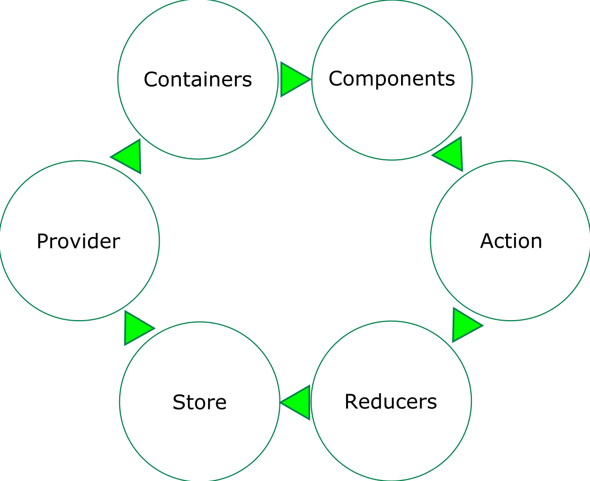

<!doctype html>
<html lang="en">
    <head>
        <meta charset="utf-8">
        <title>reveal-md</title>
        <link rel="stylesheet" href="./css/reveal.css">
        <link rel="stylesheet" href="./css/theme/black.css" id="theme">
        <link rel="stylesheet" href="./css/highlight/zenburn.css">
        <link rel="stylesheet" href="./css/print/paper.css" type="text/css" media="print">
          <link rel="stylesheet" href="./_assets/css/font-awesome.min.css">

    </head>
    <body>

        <div class="reveal">
            <div class="slides"><section  data-markdown><script type="text/template"># Team Gibraltar
#### Presents
<div>
<span>


</span>
</div>
#### Created By:
Randy && Haiden
</script></section><section  data-markdown><script type="text/template">
# What is React?
* React is component based JavaScript UI Framework.
* React takes a composition approach to create reusable UI components.
* A component has an idea of a state or prop. A state represents a components data, primitive values, and react elements/functions.
</script></section><section  data-markdown><script type="text/template">
### What about Inheritance?
>At Facebook, we use React in thousands of components, and we haven’t found any use cases where we would recommend creating component inheritance hierarchies.
</script></section><section ><section data-markdown><script type="text/template">
#### What do we love about it?

</script></section><section data-markdown><script type="text/template">

 ## ES6 SYNTAX

* Template Strings
```
 `Hello ${user.name}`
```
* Fat Arrow Functions
```
  => () {return true}
``` 
* Destructuring Assignment
```
 {name, role} = this.props.user;
```

</script></section><section data-markdown><script type="text/template">

# JSX
* HTML Literals
</script></section></section><section  data-markdown><script type="text/template">
# What is Redux?

#### Redux is a predictable state container for JavaScript apps.

- Why would we use redux?
    * It is tiny (2kB, including dependencies).
    * The state of your app is stored in an object tree inside a single store.
</script></section><section  data-markdown><script type="text/template">
#### Redux and it's opinions

* Redux provides the idea of:
    * Global Store, Actions and a Reducer
* The Global Store is a immutable object of the entire application.
* Actions specify the mutations that need to occur to the Store.
* Reducers decides what and how a specific Action transforms the entire applications state.
</script></section><section  data-markdown><script type="text/template">
### React-Redux Cycle

<div>
    
</div>
</script></section><section  data-markdown><script type="text/template">
#### Why do we think its cool?

* Powerful Developer Tools
    * The state of you application is now held accountable by Actions.
    * You can trace or debug by replicating those actions.
    * We can now make better and more complex choices in our application.
</script></section><section  data-markdown><script type="text/template">
## File Structures

* Focus on two basic file structures
    * Modular Components
    * Redux Organization
</script></section><section ><section data-markdown><script type="text/template">
## File Structure - Base
<pre class='no-borders tree'>
React-Redux Project
│   package.json    | Records project info + project dependencies
│   README.md       | Documentation
│                   |
├───node_modules    | Stores all dependency folders
│
├───src
│   │   index.html
│   │   index.js
│   │   store.js
.
.
.
</pre>

</script></section><section data-markdown><script type="text/template">

### File Structure - Redux
<pre class='no-borders'>
.  src
.   │
.   ├───styles
│   │
│   ├───actions
│   │       actions
│   │
│   ├───Reducers
│   │       reducers
│   │
│   └───components
│       ├───app
│       │
│       └───componentA
│       .           _componentA
│       .           componentA
│       .
│
├───static
│   └───images
│
└───webpack
</pre>

</script></section><section data-markdown><script type="text/template">

### File Structure - Modular
<pre class='no-borders tree'>
.  src
.   │
.   │
│   ├───styles 
│   │
│   └───Components
│       ├───app
│       │     app_reducer
│       │
│       ├───componentA
│       .           _componentA 
│       .           componentA-actions
│       .           componentA-reducer
│                   componentA
├───static
│   └───images
│
└───webpack
</pre>
</script></section></section><section ><section data-markdown><script type="text/template">
## Component Example
```javascript
import React, { Component } from 'react'

export default class ComponentA extends Component {

  constructor(props, context) {
    super(props);

    this.state = { };
  }
  render() {
    return (
        <div>Hello World</div>
    )
  }

}

```

</script></section><section data-markdown><script type="text/template">

## Actions

```javascript
export const GET_COMPONENT_DATA = 'GET_COMPONENT_DATA';

export function getComponentData(data) {
  return {
    type: GET_COMPONENT_DATA,
    payload: data
  }
}

```
</script></section><section data-markdown><script type="text/template">

## Reducer 
```javascript
export default function (state={}, action) {
  let stateCopy = {...state};
  switch (action.type) {
    case 'GET_COMPONENT_DATA':
       /*Do your mutex here!*/
      return {...state, your_mutex};
    default:
      return {...stateCopy};
  }
}

```
</script></section><section data-markdown><script type="text/template">

## Container 
```javascript
import Component from './componentA';
import * as ComponentActions from './componentA-actions.js';
import {bindActionCreators} from 'redux';
import {connect} from 'react-redux';

function mapStateToProps(state) {
  return {
      data: state.your_mutex
  }
}

function mapDispatchToProps(dispatch) {
  return bindActionCreators({
    
  }, dispatch);
}

export default connect(mapStateToProps, mapDispatchToProps)(Component);

```

</script></section><section data-markdown><script type="text/template">

## Store
```javascript
import {applyMiddleware, createStore} from 'redux';

import rootSaga from '../app/app-reducer';

export default createStore(reducer);

```

</script></section><section data-markdown><script type="text/template">

## index.js
```javascript

import React, { Component } from 'react';
import ReactDOM from "react-dom";
import {Provider} from 'react-redux';
import store from './store';

import App from './app/_app';

ReactDOM.render(
    <Provider store={store}>
        <App />
    </Provider>,
    document.getElementById('app')
);

```
</script></section></section><section  data-markdown><script type="text/template">
<!-- Was thinking it would be cool to show how many React projects we have -->
## Projects that use React + Redux

* Portal
* DIET
* Tank Vapors
* GroudWater
* Socrates
* 318
* Grow
</script></section><section  data-markdown><script type="text/template">
## Resources
* [npmjs](www.npmjs.com)
* [React](github.com/facebook/react)
* [Redux](github.com/buckyroberts/React-Redux-Boilerplate)
</script></section><section  data-markdown><script type="text/template">
# Questions?</script></section></div>
        </div>

        <script src="./lib/js/head.min.js"></script>
        <script src="./js/reveal.js"></script>

        <script>
            function extend() {
              var target = {};
              for (var i = 0; i < arguments.length; i++) {
                var source = arguments[i];
                for (var key in source) {
                  if (source.hasOwnProperty(key)) {
                    target[key] = source[key];
                  }
                }
              }
              return target;
            }

            // Optional libraries used to extend on reveal.js
            var deps = [
              { src: './lib/js/classList.js', condition: function() { return !document.body.classList; } },
              { src: './plugin/markdown/marked.js', condition: function() { return !!document.querySelector('[data-markdown]'); } },
              { src: './plugin/markdown/markdown.js', condition: function() { return !!document.querySelector('[data-markdown]'); } },
              { src: './plugin/highlight/highlight.js', async: true, callback: function() { hljs.initHighlightingOnLoad(); } },
              { src: './plugin/zoom-js/zoom.js', async: true },
              { src: './plugin/notes/notes.js', async: true },
              { src: './plugin/math/math.js', async: true }
            ];

            // default options to init reveal.js
            var defaultOptions = {
              controls: true,
              progress: true,
              history: true,
              center: true,
              transition: 'default', // none/fade/slide/convex/concave/zoom
              dependencies: deps
            };

            // options from URL query string
            var queryOptions = Reveal.getQueryHash() || {};

            var options = {};
            options = extend(defaultOptions, options, queryOptions);
        </script>


        <script>
            Reveal.initialize(options);
        </script>
    </body>
</html>
